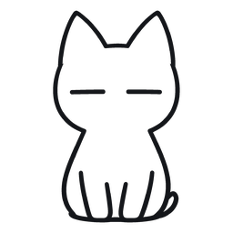

今天也来刷一组
GIme
搜索题库 / 知识点
题库分类
收起
今日待刷题
组卷出题
学习资料
按薄弱点推荐
最近练习
查看全部
题库
错题本
我的
设置

GIme
刷好每一个题
首页
题库
错题本
我的
单选题
上一题
下一题
有什么不懂就点大肥鱼哦！
答题卡
卡片
全屏
收回对话
正在取原图…
蓝色大肥鱼
设置
蓝色大肥鱼
问大肥鱼这道题。它会读取当前题目和题库来回答；需要时还能把解析写回题库。
发送
写给大肥鱼
收起
发送